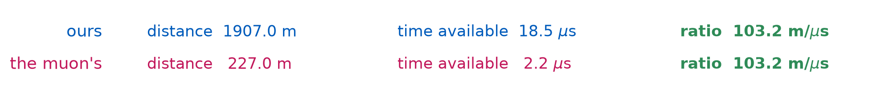
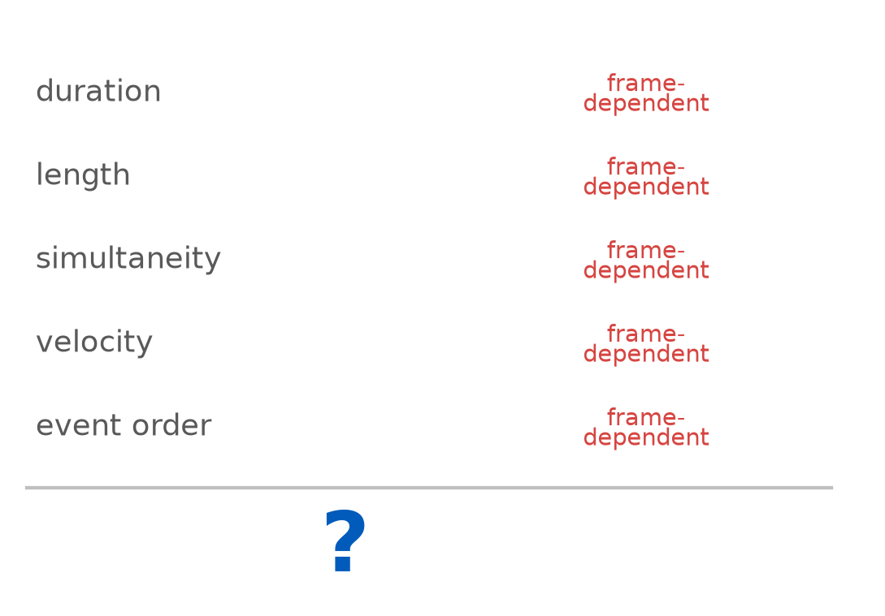
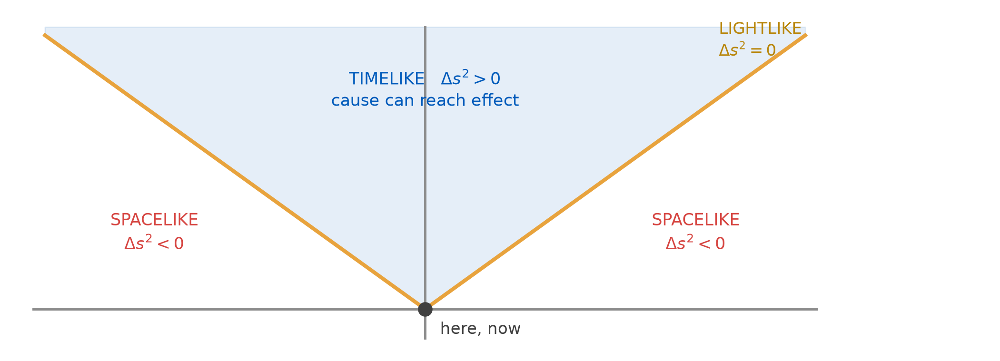
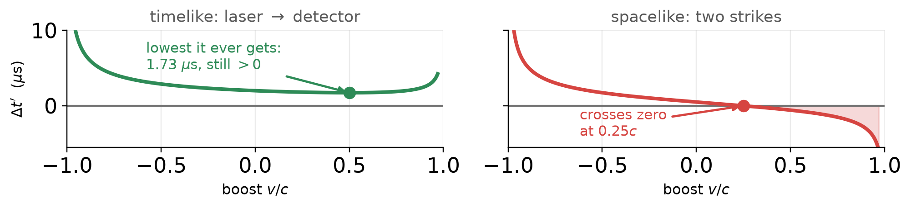
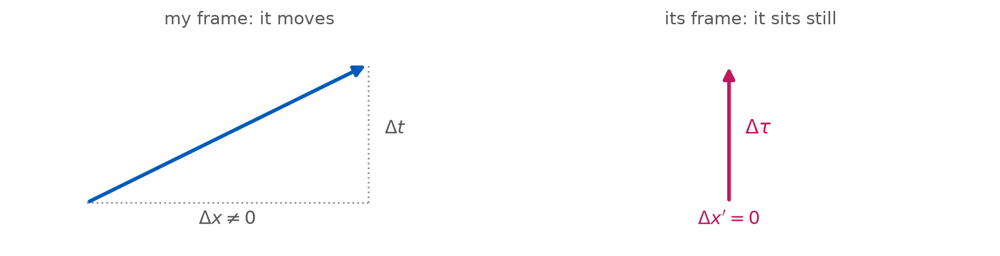
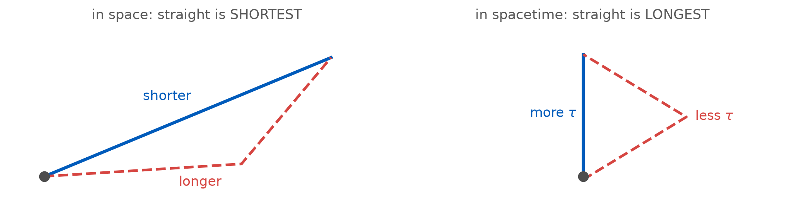
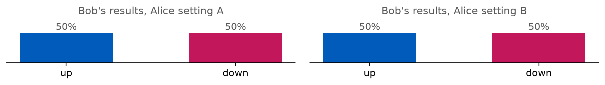
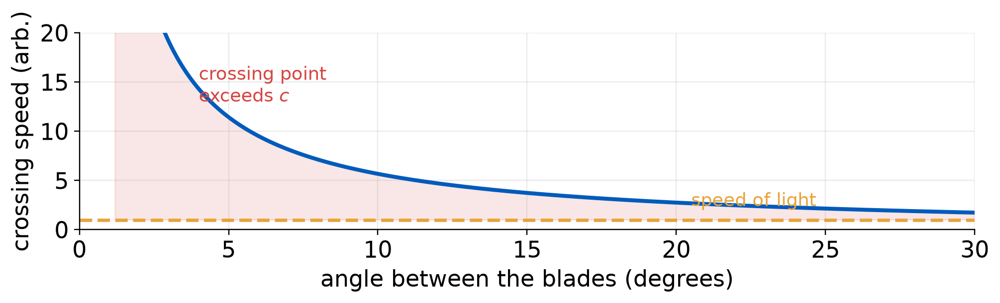
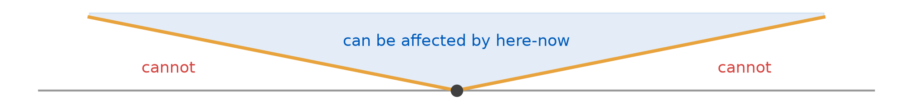
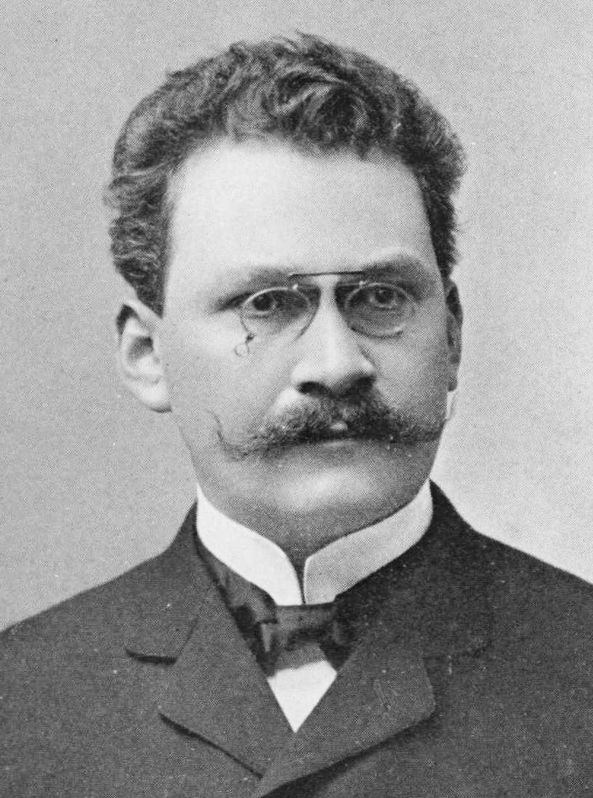

The Invariant Interval
PHY 208 · Special Relativity · Lecture 8
Tim Thomay
2026-09-17
Before we start
Today needs a device. One laptop or phone per pair. Sit with your pair now and open this, before the physics starts:
laserlab.github.io/phy208/Lectures/L08/interval.html
Notebook entry due 11:00 Tuesday — today’s demonstration. Prediction written before we run anything, as always.
Milestone 1 due Fri Oct 2. Prep check 4 due Tue 10:30.
Tuesday’s exit ticket
Why does the position \(x\) appear in an equation for time?
The answer: because simultaneity is frame-dependent. Two events at different \(x\) get different \(t'\) precisely because the frames disagree about which clocks are synchronised.
The reading to rule out: “the term corrects for how long light took to reach me.”
No. Every event is stamped by the local clock standing next to it, in a lattice we synchronised in L03. There is no travel time left to correct — the disagreement is about whose clocks read zero together.
The question in the room
I understand what the muon sees and what we see are different. I don’t understand how both descriptions predict the muon reaches the ground, when they are different.
Two frames, two completely different accounts. The muon’s clock is fine and the mountain is short; our clock is fine and the muon’s is slow. Neither is a correction to the other.
And they agree to the last digit. Not luck, and not a coincidence to shrug at — it needs a reason.
Why they cannot disagree
Both stories carry the same \(\gamma\):
Our books
lifetime stretched: \(\gamma\,\tau\)
distance full: \(h\)
The muon’s books
lifetime normal: \(\tau\)
distance shrunk: \(h/\gamma\)

Divide one by the other and \(\gamma\) cancels: same speed, both rows. The two accounts are one statement, scaled by the same factor in opposite places. (Mt Washington, \(\gamma = 8.4\), as in prep check 3.)
Everything moves. Does anything not?
Three weeks of quantities that depend on who is asking:
durations, lengths, simultaneity, velocities, the order of events.
Is there anything left that everyone agrees on?

Tuesday left a promise
Rotation
\[R = \begin{pmatrix} \cos\theta & -\sin\theta \\ \sin\theta & \phantom{-}\cos\theta \end{pmatrix}\]
preserves \(x^{2} + y^{2}\) — the length of the vector.
Boost
\[\Lambda = \begin{pmatrix} \cosh\phi & -\sinh\phi \\ -\sinh\phi & \phantom{-}\cosh\phi \end{pmatrix}\]
preserves ? — the thing I refused to name.

\(\cos^{2} + \sin^{2} = 1\) → a sum is preserved. \(\cosh^{2} - \sinh^{2} = 1\) → a difference is.
Four numbers on that screen
Open this now, before the physics starts:
laserlab.github.io/phy208/Lectures/L08/interval.html
Your page shows one pair of events and a readout with four entries. Know what each one is before you touch anything:
| \(\Delta t\) | time between the two events | in this frame |
| \(\Delta x\) | distance between them | in this frame |
| \(\gamma\) | \(1/\sqrt{1-v^{2}/c^{2}}\) | set by the slider |
| \(\Delta s^{2}\) | \((\Delta t)^{2} - (\Delta x)^{2}\) | watch this one |
The demonstration: predict first
In your pairs, on your own device. Open the page, enter your group name — spelling is forgiving: Rømer, Romer and Römer all count the same. You get your own pair of events; nobody else has your numbers.
Before you touch the slider, both of you write in your notebook:
I am going to boost the frame, up to \(0.95c\). Of the four numbers just defined, which come out unchanged? All of them? None?
Commit. Then press reveal.
Then record three rows, at \(v = 0\), \(0.60c\), \(0.90c\):
\[\Delta t \qquad \Delta x \qquad \gamma \qquad \Delta s^{2}\]
Copy the numbers by hand. They are your evidence.
What every pair just found
Show of hands first: who predicted the bottom row?
\[\boxed{\;\Delta s^{2} = c^{2}\Delta t^{2} - \Delta x^{2}\;} \qquad\text{(with } c = 1\text{: the tool's } \Delta t^{2} - \Delta x^{2}\text{)}\]
v/c dt dx ds^2
0.00 3.000 1.000 8.000000
0.30 2.830 0.105 8.000000
0.60 3.000 -1.000 8.000000
0.90 4.818 -3.900 8.000000
-0.75 5.669 4.914 8.000000Both coordinates change in every frame. The combination does not, to every decimal place. Different pairs, different events, same finding.
Why it is not a length
| rotation, in space | boost, in spacetime | |
|---|---|---|
| preserves | \(x^{2} + y^{2}\) | \(c^{2}t^{2} - x^{2}\) |
| the sign | always positive | any sign |
| curves of constant value | circles | hyperbolae |
| what it measures | distance | interval — a new thing |
That minus sign is the difference between space and spacetime. It is not a distance with a typo: it can be positive, negative, or zero, and each case means something physical.
Three signs, three meanings

What the sign protects
| separation | \(\Delta s^{2}\) | can A cause B? | do frames agree on the order? |
|---|---|---|---|
| timelike | \(> 0\) | yes | yes — always |
| lightlike | \(= 0\) | only by light | yes |
| spacelike | \(< 0\) | no | no — order is frame-dependent |
The two “no”s line up exactly. Order reverses only where nothing could have travelled — so no frame ever sees an effect precede its cause.
Watch it not flip
Two events 300 m apart, 2.0 μs apart: a pulse leaves a laser, a detector fires. Send it down 300 m of fibre and it arrives in \(1.50\ \mu\)s, in time to cause the second event. Boost as hard as you like:

Left: \(\Delta t'\) bottoms out at \(1.73\ \mu\)s and climbs again; cause stays first in every frame. Right: nothing connected them, so the order is free to reverse.
Proper time is the interval

Go to the frame where both events happen at the same place — the one that rides along. There \(\Delta x' = 0\), so \(\Delta s^{2} = c^{2}\Delta\tau^{2}\).
The interval is the wristwatch time of whatever travels between the two events. \(\tau\) from L05 was today’s invariant all along — we just did not have its name.
The longest path is the straight one

The minus sign reverses the inequality: a detour through space costs proper time. Sitting still is the way to age the most.
Somebody has actually done it. Scott Kelly spent 340 days on the ISS at 7.66 km/s:
340 days at 7.66 km/s -> 9.59 ms of proper time not lived
(28.2 us per day)The muon, one last time
ground: dt = 6388609.715 us dx = 1907.0 m -> ds^2 = 36641.1 m^2 tau = 638061.896 us
muon : dt = 638061.896 us dx = 0.0 m -> ds^2 = 36641.1 m^2 tau = 638061.896 us
that 0.64 us is 290028.134 of a 2.2 us lifetime -> e^-0.29 = 0% surviveTwo frames, two completely different stories, one interval: 0.64 μs of the muon’s own time — the fraction of its 2.2 μs lifetime the trip really cost, and the number that decided whether it lived.
Nothing is absolute?
| the claim | verdict |
|---|---|
| “duration is relative” | true |
| “length is relative” | true |
| “simultaneity is relative” | true |
| “so nothing is absolute” | false — the interval is, and so is every event |
Relativity is not the claim that everything is a matter of opinion. It is the discovery of what the frame-independent facts actually are — and they are the ones the physics is about.
Two events, in my frame: A is a switch thrown at \(x = 0\), and B is a lamp lighting 600 m away, 1.0 microsecond later. Someone claims A caused B. Use \(c = 300\) m per microsecond.
Which statement is correct?
(a) A could have caused B, and every frame agrees A came first
(b) A cannot have caused B, and some frames put B first
(c) A cannot have caused B, but every frame still agrees A came first
(d) A could have caused B, but only frames slower than \(0.5c\) agree A came first
The bound is on information
Can anything move faster than light?
A laser spot swept across the Moon easily exceeds \(c\).
sweep 1 deg in 0.1 s
spot speed = 6.709e+07 m/s = 223634.85 cNothing is wrong. Every photon flew from Earth at \(c\); the “spot” is a sequence of unrelated arrivals.
| travels faster than \(c\)? | carries information? |
|---|---|
| laser spot on the Moon | ✗ |
| crossing point of shears | ✗ |
| phase velocity in a guide | ✗ |
| cosmological recession | ✗ |
The speed limit is not on motion. It is on causal influence — and that is precisely what \(\Delta s^{2} \geq 0\) encodes.
So somebody measured it
| 2000 · Wang, Kuzmich & Dogariu | caesium vapour, group index \(n_g = -310\) | the peak leaves early |
| 2003 · Stenner, Gauthier & Neifeld | encoded a real symbol, timed the detector | arrives slightly later than vacuum |
| 2011 · Zhang et al., single photons | the sharp leading front | exactly \(c\), always |
The envelope can do almost anything. The front cannot — and the front is what carries the news.
Even entanglement obeys it
Measure one half of an entangled pair and the far half is instantly described differently. Three experiments in 2015 closed the last loopholes: local realism is dead.
And still no message: whatever you choose to do at your end, the statistics at the far end are exactly unchanged. The correlation only becomes visible when the two records are compared — over an ordinary channel, at \(c\) or slower.

The scissors, and why nothing is at the crossing point

Blades of length \(L\) meeting at angle \(\theta\) cross at \(x = L/\tan\theta\). As \(\theta \to 0\) the crossing point runs out without limit.
Standing at the crossing point — could you learn anything about the far ends of the blades faster than light?
The statement that actually holds
The slogan
“Nothing can travel faster than light.”
False as stated — the spot and the crossing point both do.
The theorem
No causal influence propagates outside the light cone.
True, and structural — it is what \(\Delta s^{2} \geq 0\) says.

The bound is on what can affect what — and \(\Delta s^{2}\) is how spacetime encodes it.
Your turn: classify and compute
In pairs, five minutes. Same four steps per row; \(c = 300\) m/μs, so metres only. 1 \(c\Delta t\) in m · 2 bigger of \(|c\Delta t|, |\Delta x|\) sets the sign · 3 \(\Delta s^{2} = (c\Delta t)^{2} - \Delta x^{2}\) · 4 your question (row 3: \(\tau = \sqrt{\Delta s^{2}}/c\)).
| \(\Delta t\) | \(\Delta x\) | question | |
|---|---|---|---|
| 1 | \(2.0\ \mu\)s | 300 m | could event 1 have caused event 2? |
| 2 | \(1.0\ \mu\)s | 600 m | can any frame reverse their order? |
| 3 | \(2.0\ \mu\)s | 590 m | what does a clock riding between them read? |
Calibrate on row 1: \(600\) m · timelike · \(+2.7\times 10^{5}\) m² — match it, then go. No match → hand up.
The three rows, worked
c*dt (m) dx (m) ds^2 (m^2) kind tau (us)
1 0.0 300.0 -9.000e+04 spacelike nan
2 0.0 600.0 -3.600e+05 spacelike nan
3 0.0 590.0 -3.481e+05 spacelike nanRow 3 is the trap: the riding clock reads 0.36 μs, not 2 μs — \(\Delta t\) is a coordinate; what the traveller ages is the interval.
What we can now say precisely
| L04 said | today says |
|---|---|
| “some pairs can be reordered” | \(\Delta s^{2} < 0\), and only those |
| “the light cone separates them” | the cone is \(\Delta s^{2} = 0\) |
| “causality survives” | because reordering needs \(\Delta s^{2} < 0\), where no signal fits |
| “proper time is what the muon has” | \(\Delta\tau = \sqrt{\Delta s^{2}}/c\) |
Same four claims, now with a number behind each. That is what an invariant buys: pictures become computations.
Relative is not arbitrary
What actually varies
\(\Delta t\), \(\Delta x\), lengths, durations, the order of some pairs.
These are readings, and a reading needs a frame: “how far to the left?” has no answer until you say left of what.
What does not
\(\Delta s^{2}\), \(\Delta\tau\), the sign of \(\Delta s^{2}\), \(c\), what happened at an event.
Every frame computes the same number.

“Everything is relative” would mean nothing is computable. What we found is the opposite: disagreement is exactly bounded, and the thing underneath is the same for everyone.
Minkowski, 1908
“Henceforth space by itself, and time by itself, are doomed to fade away into mere shadows, and only a kind of union of the two will preserve an independent reality.”
Einstein’s old mathematics teacher, three years after the 1905 paper, telling a room of natural scientists what the paper had actually been about.

Tuesday
Spacetime diagrams
| What we get | the whole unit as one picture you can draw |
| The calibration | those hyperbolae you traced today become the ruler |
| Also Tuesday | presentations round 1 begins |
| Prep check 4 | due Tue 10:30 — transformation & interval |
| Notebook | today’s demo entry due 11:00 Tuesday |
Exit ticket
A student says: “Relativity proves that everything is relative and nothing is really true.”
Using today’s lecture, what is wrong with this? Name something that is not relative.
On UB Learns, under Quizzes. Due 11:59 tonight.
Not graded, ever — I read these to decide what to spend class time on. “I don’t follow this, and here is where I lost it” is a useful answer.
PHY 208 — The Invariant Interval Tim Thomay · University at Buffalo · Fall 2026
Course material licensed CC BY-SA 4.0
Images retain their original licenses — see img/CREDITS.md